Which of these is not one of the characteristics of all living organisms?
Excretion Breathing Sensitivity Nutrition Which group of organisms is prokaryotic?
Fungi Protoctists Bacteria Plants What are fungal cell walls made of?
Chitin Cellulose Glycogen Starch Which organism is a protoctist that causes disease?
Pneumococcus Mucor Chlorella Plasmodium How do animals usually store carbohydrate?
Starch Glycogen Sucrose Cellulose Which structure do bacteria have that plant cells do not?
Cell wall Cell membrane Plasmids Cytoplasm Why are viruses not classed as living organisms?
They are not made of cells and only reproduce inside living cells They are too small to see They have no DNA They cause disease Describe how fungi such as Mucor obtain their food.
Saprotrophic nutrition Hyphae secrete (digestive) enzymes onto the food / extracellular digestion The soluble products are absorbed (by the hyphae) Give four differences between a plant and an animal.
Plants have cellulose cell walls; animals have no cell wall Plants have chloroplasts / photosynthesise; animals feed on other organisms Plants store starch (or sucrose); animals store glycogen Animals can move from place to place / have nervous coordination; plants can’t Describe the structure of a virus and explain why it can only reproduce inside other cells.
Protein coat Genetic material: DNA or RNA (one type) No cell structure / no cytoplasm or ribosomes, so it must use a host cell to make copies (parasite)
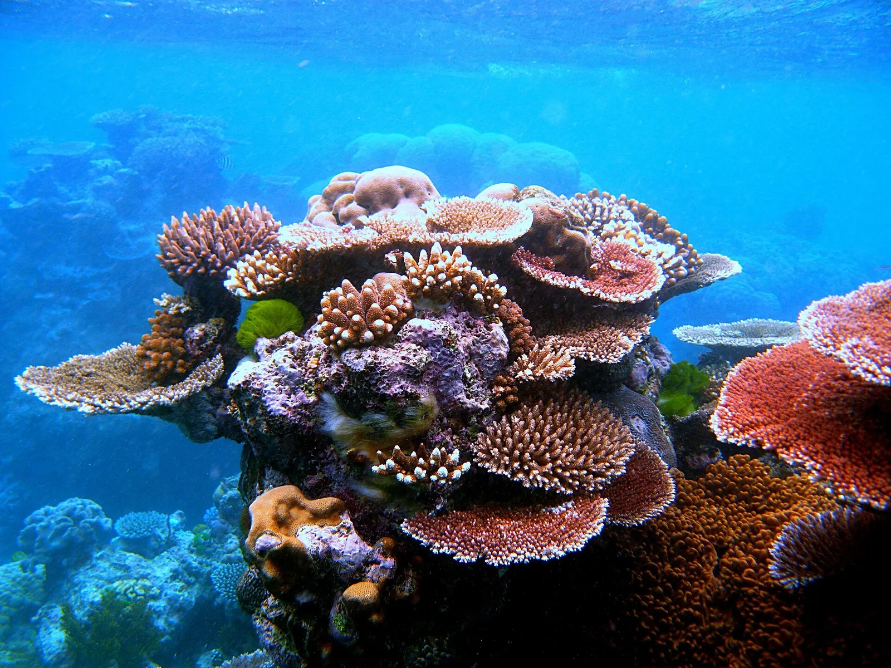
IGCSE Biology · Topic 1
Livingorganisms 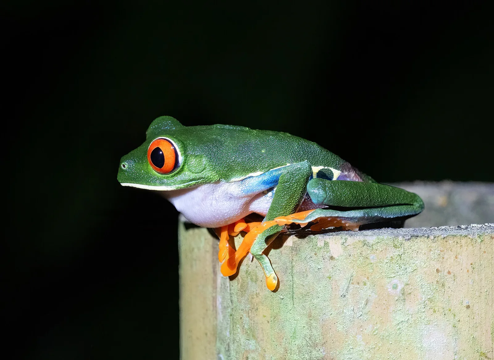
Topic 1a
Characteristics ofliving organisms MRS C GREN All living organisms, from bacteria to plants and animals, carry out 8 life processes
Meet Mrs C Gren
HELLO my name is
Mrs C Gren M ovement
R eproduction
S ensitivity
C ontrol
G rowth
R espiration
E xcretion
N utrition
M R S C G R E N
M ovementAn action that changes the position or place of the organism or part of it.
Animals move from place to place Plants move parts: shoots bend towards light 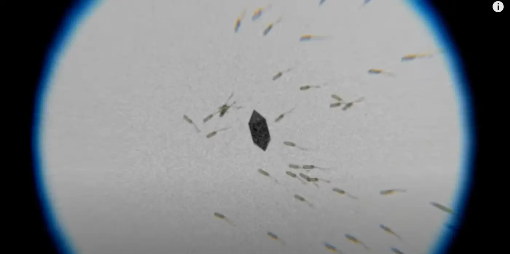
Some bacteria swim using flagella M R S C G R E N
R eproductionMaking more organisms of the same kind.
Ducks: a male and a female mate, then she lays eggs Bacteria reproduce by splitting in two Flowers make seeds M R S C G R E N
S ensitivityDetecting changes in the surroundings (stimuli) and responding to them.
A shoot detects light and grows towards it Young sunflowers turn to follow the sun Animals detect stimuli with sense organs M R S C G R E N
C ontrolKeeping internal conditions, like temperature and water content, constant.
A sea otter keeps its body warm in cold water 37 °C
too hot → sweat
too cold → shiver
body temperature kept constant
Body temperature is kept at about 37 °C M R S C G R E N
G rowthA permanent increase in size, and developing (becoming more complex).
seed 1 root grows 2 shoot grows 3 young plant 4 A bean seed grows into a plant frogspawn 1 tadpole 2 legs grow 3 frog 4 Tadpoles develop into frogs Humans grow from children to adults M R S C G R E N
R espirationChemical reactions in cells that release energy from nutrients such as glucose.
mitochondrion (inside a cell)
glucose + oxygen → carbon dioxide + water
+ energy released Aerobic respiration in every cell Muscles respire to release energy for running 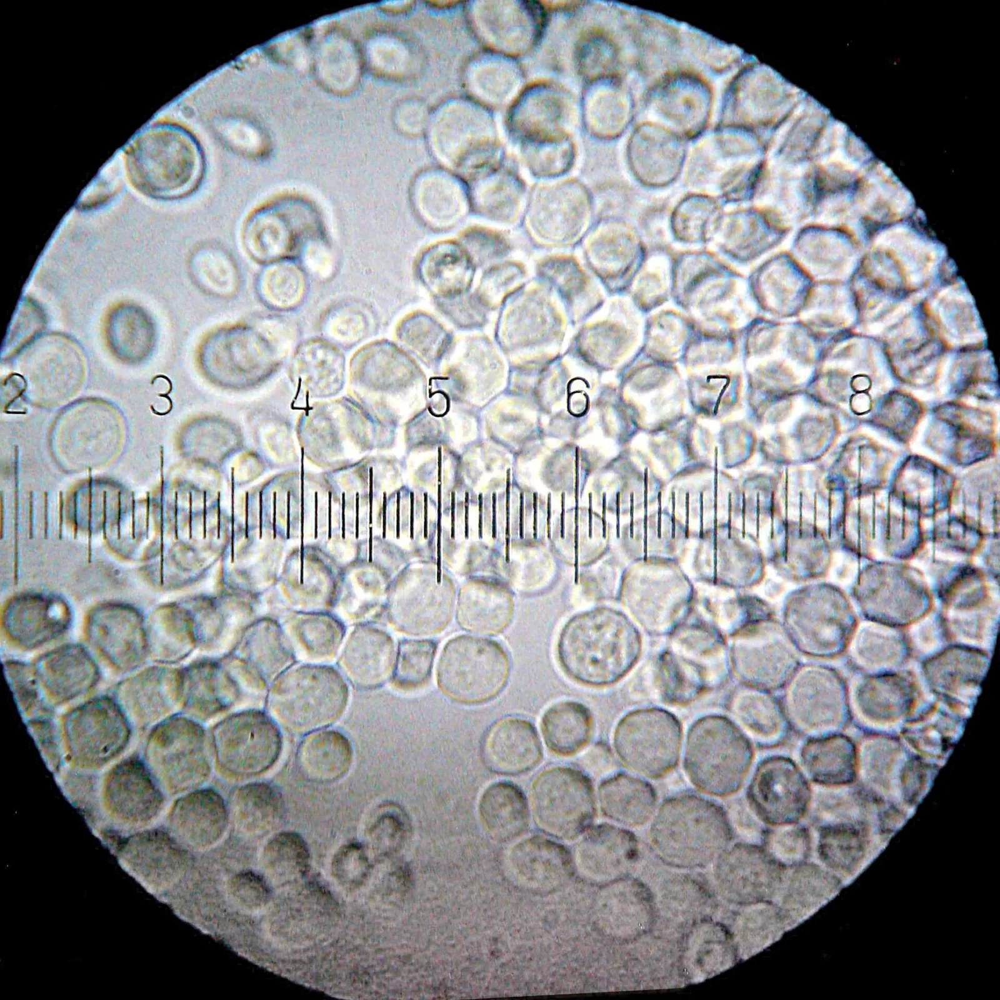
Yeast respire too M R S C G R E N
E xcretionGetting rid of waste made by the body’s own reactions.
lungs carbon dioxide kidneys urea (in urine) leaves O₂ / CO₂ out getting rid of waste made by the body's reactions Waste made by reactions is removed 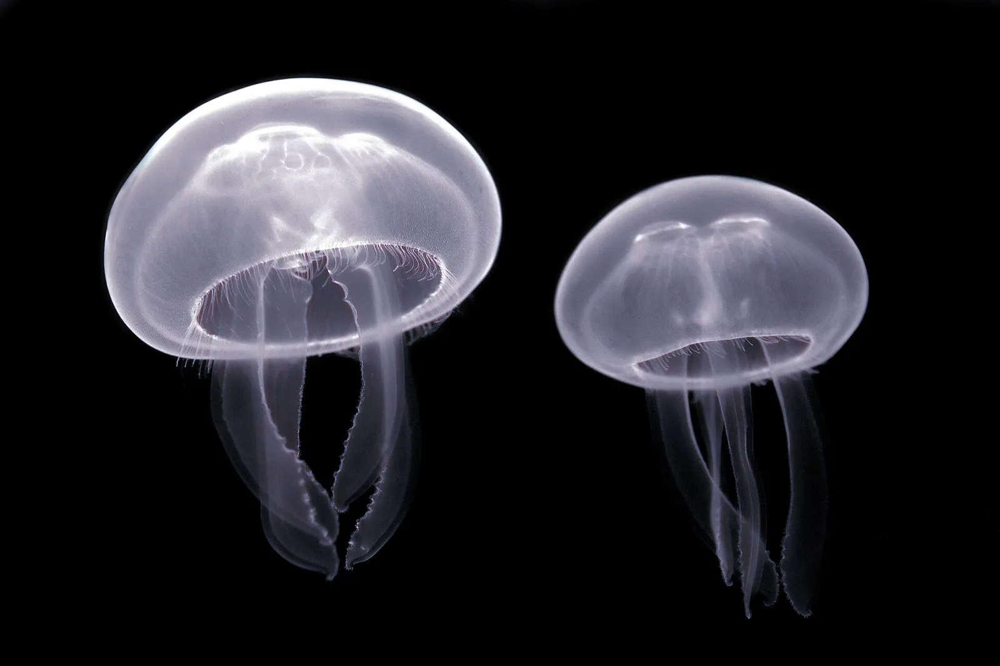
Jellyfish lose waste into the water by diffusion M R S C G R E N
N utritionTaking in or making food for energy and to build new cells.
carbon dioxide (air) water (roots) → glucose plants make food Plants make their own food: photosynthesis Animals eat other organisms Fungi digest food outside their bodies Alive or not? Fire 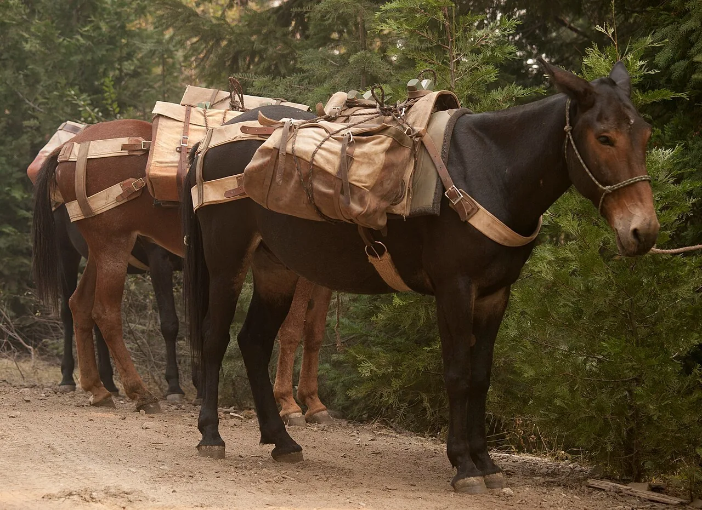
A mule 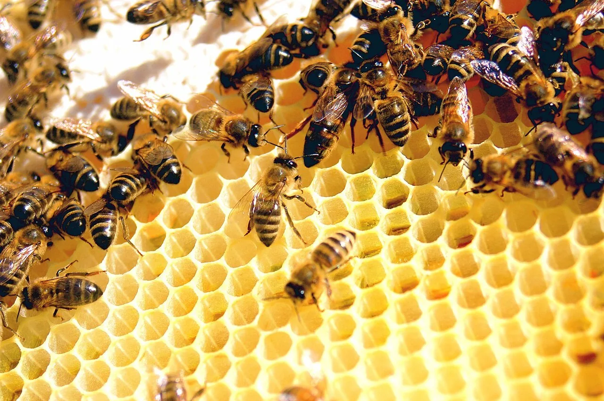
Worker bees Alive or not? 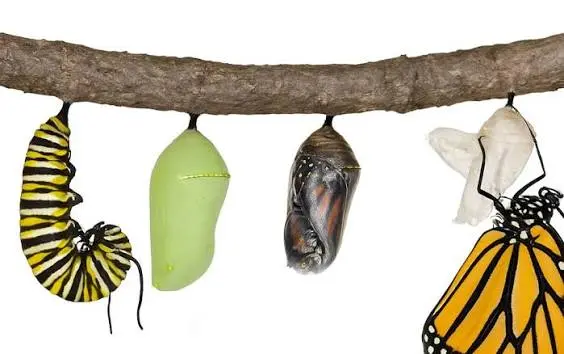
A chrysalis A seed 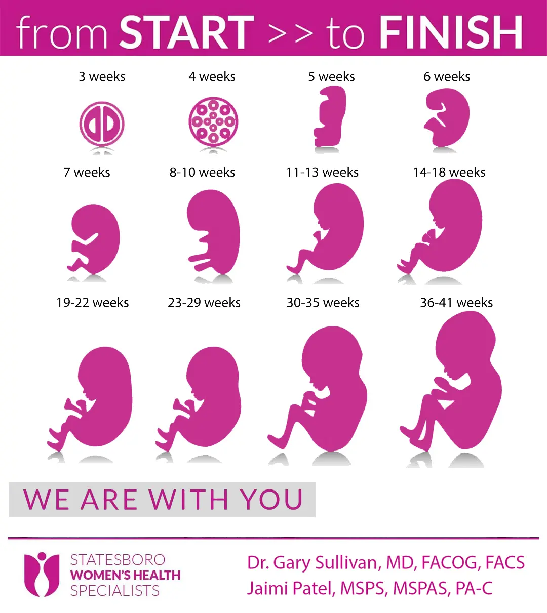
A fetus True or false? All living organisms have eyes.
All living organisms breathe.
All living organisms need nutrition.
All living organisms can reproduce.
All living organisms do digestion.
Meet the jellyfish Over 2,000 species worldwide — around for >600 million years
Simple animals — yet thriving in Earth’s oceans
No brain, heart, blood or bones — around 95% waterStinging tentacles catch small fish (and even other jellyfish)Nerve net coordinates responses; some glow in the dark Numbers are increasing in warmer, more acidic oceans Exam question: are jellyfish alive? [3] Read the passage
Jellyfish swim by pulsing their umbrella-shaped bell and feed on small fish caught in their stinging tentacles.
They absorb oxygen directly from the water and have a nerve net that coordinates responses.
Most jellyfish release sperm or eggs directly into the water.
Suggest and explain 3 pieces of evidence that jellyfish are living.
Swim → movement Feed on small fish → nutrition Take in oxygen → respiration Nerve net coordinates responses → sensitivity / control Release sperm and eggs → reproduction Jellyfish: excretion and cloning How do jellyfish carry out excretion? [1]
They release it into the water by diffusion
Some clone themselves. How does this show they are living? [1]
It is a type of reproduction
Topic 1b
Variety ofliving organisms Classification LIVING ORGANISMS
EUKARYOTIC cells have a nucleus PROKARYOTIC no nucleus NOT LIVING not a kingdom Animals feed on others Plants make their own food Fungi hyphae, chitin walls Protoctists mostly single-celled Bacteria no nucleus Viruses not cells Eukaryotic or prokaryotic? Eukaryotic
has a nucleus
animals, plants, fungi, protoctists
Prokaryotic
no nucleus
bacteria
Animals Multicellular Heterotrophic : eat other organisms for foodNo cell wall , no chloroplastsStore carbohydrate as glycogen Move from place to place; nervous coordination e.g. humans , housefly , mosquito
Groups of animals ANIMALS VERTEBRATES with a backbone Mammals elephant Birds robin Reptiles turtle Amphibians frog Fish salmon INVERTEBRATES no backbone Insects housefly Arachnids spider Crustaceans shrimp Molluscs snail Cnidarians jellyfish Annelids earthworm Animals? Corals: invertebrates Snail Jellyfish Spotlight: the Greenland shark Cold, deep Arctic water, grows ~1 cm a year, lives for several hundred years: the oldest known vertebrate
Plants Multicellular Autotrophic : make their own food by photosynthesisCellulose cell walls and chloroplasts Store carbohydrate as starch or sucrose Can’t move from place to place e.g. maize (a cereal), peas , beans
Groups of plants PLANTS MOSSES AND FERNS no seeds: spores Mosses spores Liverworts spores Ferns spores CONIFERS seeds in cones Conifers pine, spruce, redwood FLOWERING PLANTS flowers; seeds in fruits Cereals maize, wheat Legumes peas, beans Trees oak, cherry Flowers gentian Non-flowering plants No flowers. Mosses and ferns make spores ; conifers make seeds in cones .
Flowering plants (angiosperms) Flowers → seeds inside fruits . The biggest group of plants.
Flowering plants we eat Exam examples: a cereal (maize) and a legume (peas or beans)
Maize: a cereal Peas: a legume 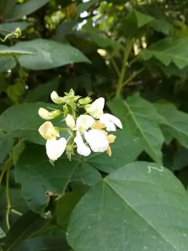
Beans: a legume 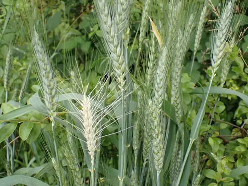
Wheat: a cereal 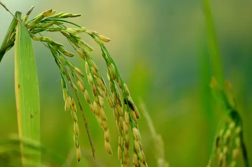
Rice: a cereal Tomato Fungi Mostly hyphae (threads) with many nuclei ; yeast is single-celled Hyphae form a mycelium Cell walls of chitin Saprotrophic : enzymes digest food outside, then absorb itStore carbohydrate as glycogen e.g. Mucor , yeast
Fungal hypha
multicellular thread (e.g. Mucor)
Many nuclei
Yeast cell
single-celled fungus (budding)
bud
Single nucleus
Vacuole
SHARED PARTS
Cell wall (chitin)
Cytoplasm
Cell membrane
Chitin in nature
CHITIN IN NATURE
a tough, flexible carbohydrate
Fungi
cell walls
mushrooms, moulds, yeast Insects
exoskeletons
beetles, bees, flies Crustaceans
hard outer shells
crabs, shrimps, lobsters Molluscs
beaks & pens
squid, cuttlefish Top 5 biological molecules
RANK & MOLECULE
RELATIVE ABUNDANCE ON EARTH
WHERE IT IS FOUND
1
Cellulose
polysaccharide
#1 by far
Plant cell walls
wood, grass, cotton — tough glucose chains
2
Hemicellulose
mixed plant sugars
Plant cell walls
wraps around cellulose fibres to bind them
3
Lignin
woody polymer
Wood & bark
rigid, waterproof polymer that supports trees
4
Chitin
#2 single polysaccharide
Fungi, insects & crustaceans
cell walls, exoskeletons & hard outer shells
5
Proteins
e.g. RuBisCO & collagen
All living cells
RuBisCO (top leaf enzyme) & animal collagen
Plants dominate Earth’s biomass — chitin is #1 outside plants (2nd most abundant single polysaccharide after cellulose).
Groups of fungi FUNGI SINGLE-CELLED one cell Yeast bread, beer MOULDS a mycelium of hyphae Mucor bread mould Penicillium fruit mould MUSHROOMS fruiting bodies of a mycelium Mushroom field mushroom Toadstool fly agaric Bracket turkey tail Fungi examples Yeast: single-celled 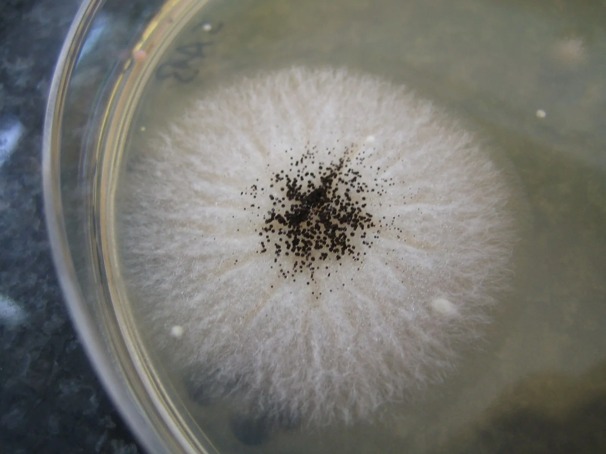
Mucor: multicellular The variety of fungi 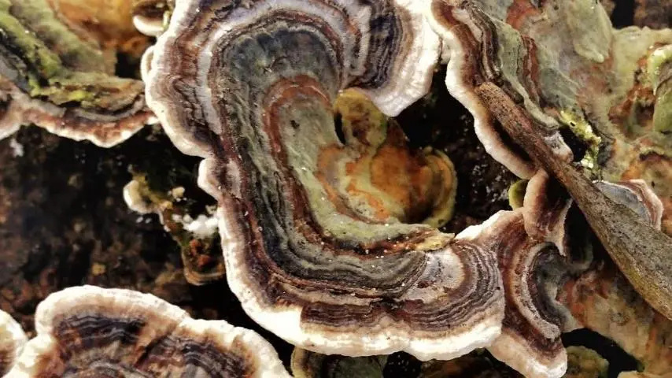
Turkey tail Mushrooms Saprotrophic nutrition
dead matter
(food)
Mushroom (fruiting body)
Mycelium (hyphae)
ZOOM: Extracellular digestion
Hypha
Dead food
large, insoluble
molecules
1. Enzymes secreted
released outside the hypha
2. Digested outside
broken into small soluble sugars
soluble products
3. Products absorbed
taken into hypha for respiration
Enzymes released onto food → digested outside → soluble products absorbed
Three ways to get food AUTOTROPHIC make their own food by photosynthesis, using light energy plants, Chlorella HETEROTROPHIC eat other organisms digest the food inside the body animals, Amoeba SAPROTROPHIC feed on dead matter enzymes digest it outside, then the products are absorbed fungi, many bacteria Saprotrophic is one kind of heterotrophic nutrition: both get their food from other organisms.
Plant or fungus ? Plants
Cell wall: cellulose Carbohydrate store: starch Nutrition: photosynthesis (chloroplasts) Fungi
Cell wall: chitin Carbohydrate store: glycogen Nutrition: saprotrophic (external enzymes) ⚠ EXAMINER TRAP: Fungi NEVER have chloroplasts and NEVER photosynthesise!
Mycorrhiza Fungus → plant: water, minerals
Plant → fungus: sugars
1. Outside the cells 2. Inside the cells hyphae wrap round the root hyphae grow into root cells Bacteria Microscopic, single-celled No nucleus : one circular chromosome Cell wall, membrane, cytoplasm Some have plasmids Most are heterotrophic (feed on other living or dead organisms); a few are autotrophic (photosynthesise) e.g. Lactobacillus , Pneumococcus
Groups of bacteria BACTERIA USEFUL many help us Lactobacillus makes yoghurt Rhizobium nitrogen for plants E. coli lives in our gut PATHOGENS cause disease Pneumococcus pneumonia Vibrio cholera Mycobacterium tuberculosis Bacteria examples Rod: Lactobacillus bulgaricus
makes yoghurt from milk
Spherical: Pneumococcus
causes pneumonia
Bacteria shapes Spheres cocci Rods bacilli Spirals and curved single pairs chains clusters e.g. Pneumococcus single chains with a flagellum e.g. Lactobacillus, E. coli spiral comma corkscrew e.g. Vibrio (cholera) Inside E. coli Cell wall green, DNA “nucleoid” yellow, ribosomes reddish purple, painting by David Goodsell
Who painted these? David Goodsell biologist & scientific illustrator
Uses real molecular size & shape data Paints inside cells by hand in watercolour Protoctists The “dustbin” kingdom — simple eukaryotes that don’t fit the other kingdoms
Microscopic, mostly single-celled Animal-like (heterotrophic) — e.g. Amoeba Plant-like (autotrophic, chloroplasts) — e.g. Chlorella Pathogen example: Plasmodium causes malaria Groups of protoctists PROTOCTISTS MORE ANIMAL-LIKE feed on other organisms Amoeba pond water Paramecium pond water Plasmodium causes malaria MORE PLANT-LIKE chloroplasts: photosynthesise Chlorella single cell Volvox ball-shaped colony Diatoms glassy cell walls More plant-like: Chlorella The variety of protoctists Diatoms, dinoflagellates, radiolarians, foraminifera Green algae in a pond Pathogens Microorganisms that cause disease
may be fungi, bacteria, protoctists or viruses
Pathogen examples 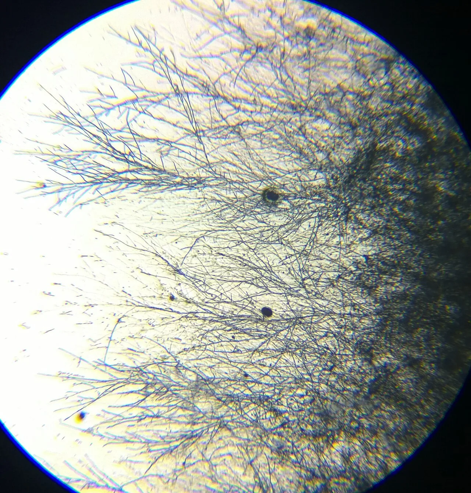
Trichophyton (fungus) → athlete’s foot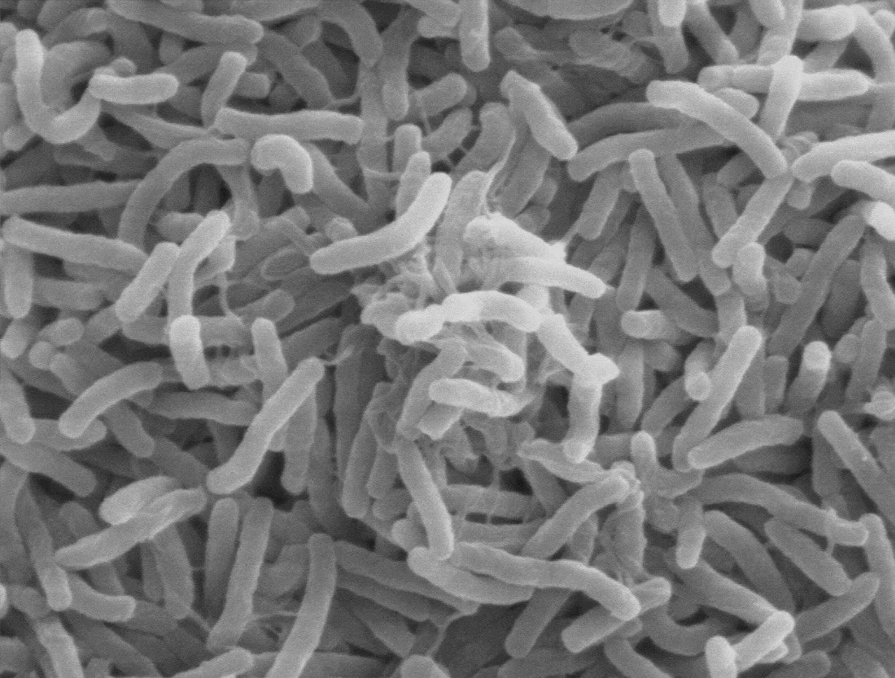
Vibrio cholerae (bacterium) → cholera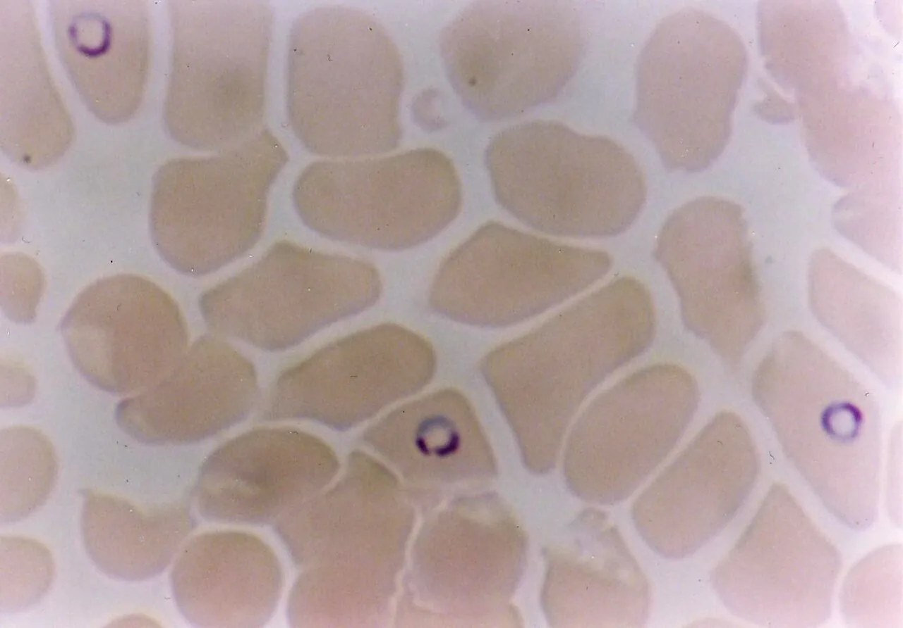
Plasmodium (protoctist) → malaria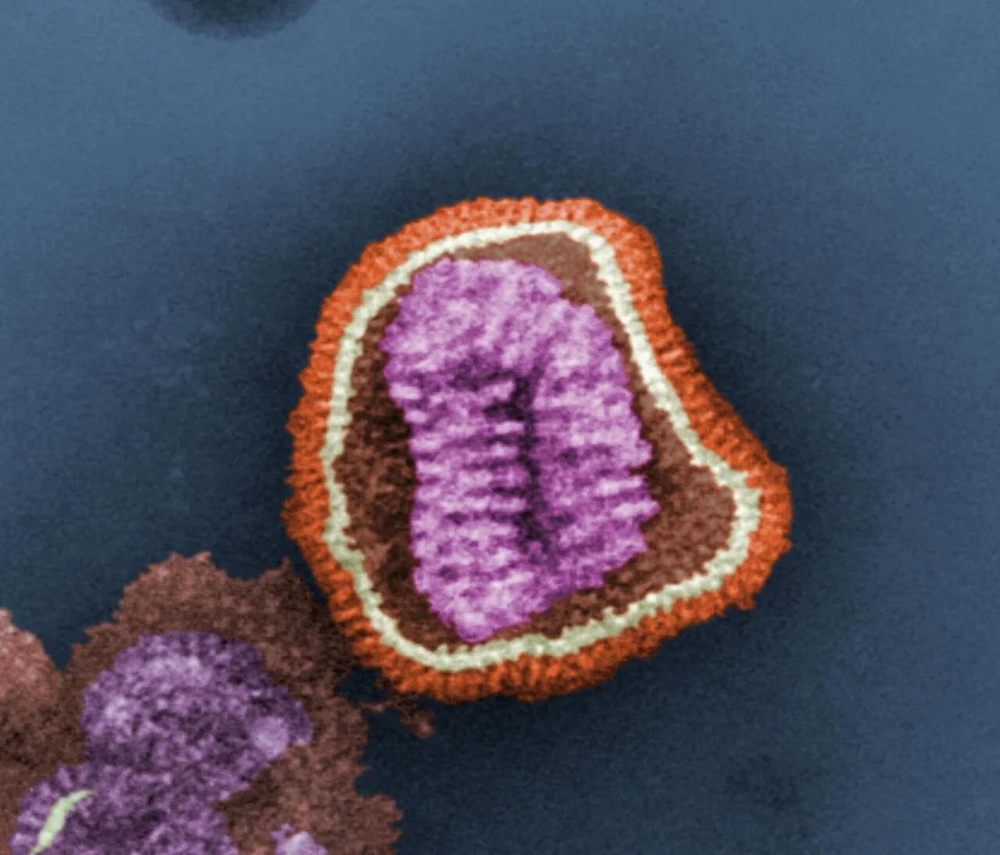
Influenza (virus) → flu Pathogens and diseases
Fungi
Trichophyton → athlete’s foot Candida → thrush Diplocarpon → rose black spot Bacteria
★ Pneumococcus pneumonia Vibrio cholerae → cholera Salmonella → food poisoning Mycobacterium → TB Protoctists
★ Plasmodium malaria Entamoeba → amoebic dysentery Phytophthora → potato blight Viruses (not a kingdom)
★ Influenza → flu , ★ HIV → AIDS ★ Tobacco mosaic virus → leaf mottling Measles virus → measles ★ Named in the Edexcel IGCSE specification, Animals and plants are not microbial pathogens (though mosquitoes act as vectors).
Viruses NOT ALIVE, NOT A KINGDOM
Not made of cells Genetic material (DNA or RNA ) inside a protein coat Much smaller than bacteria Parasites : only reproduce inside living cellsInfect every kind of organism e.g. flu , HIV , tobacco mosaic virus
Are viruses living cells ?
Which statement about viruses is TRUE ?
A They are tiny prokaryotic cells with a cell wall
B They are not cells — just a protein coat + DNA or RNA
C They reproduce independently on food surfaces
⚠ EXAMINER TIP: Viruses are parasitic — they can ONLY reproduce inside living host cells!
Virus examples 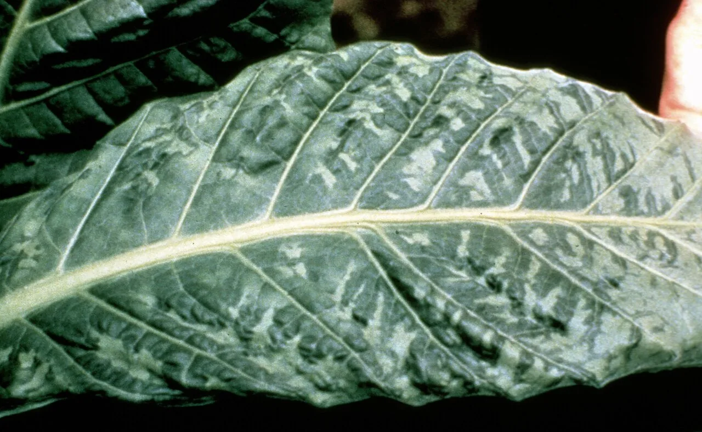
Tobacco mosaic virus: stops chloroplasts forming → mottled leaves 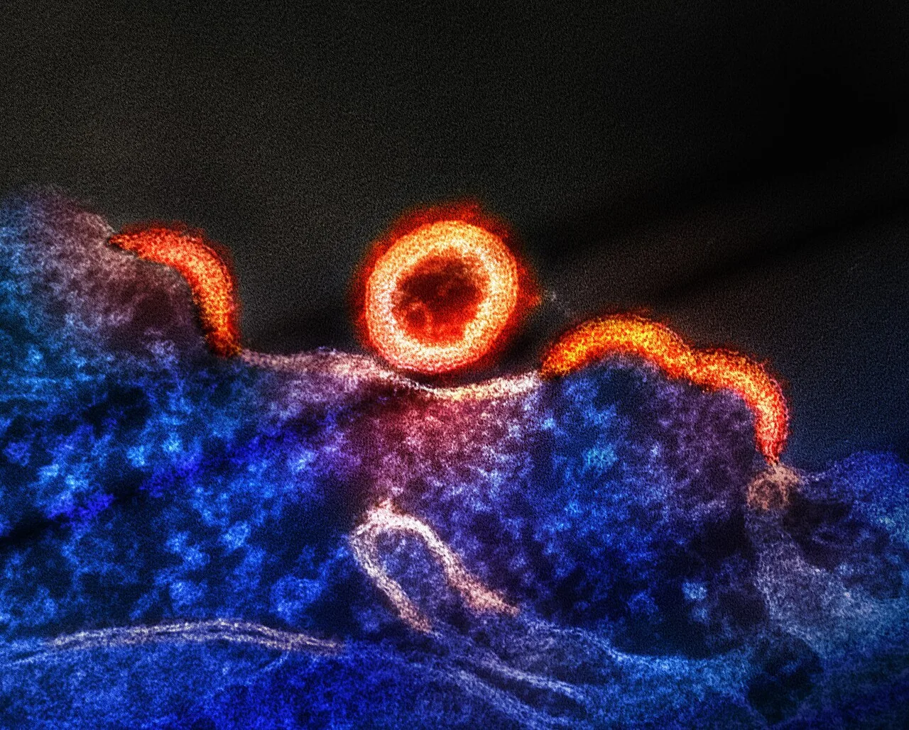
HIV (red) attacking a white blood cell (blue) → AIDS 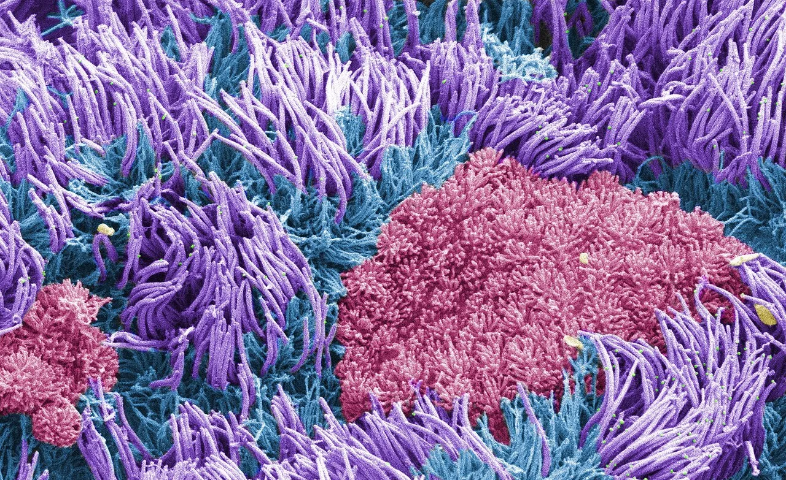
Influenza infecting human airway cells → flu 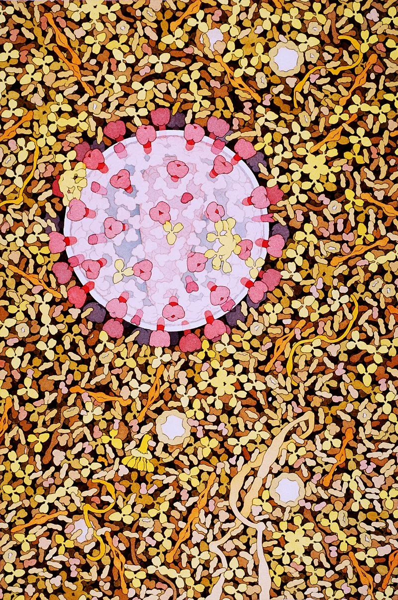
HIV under attack HIV (the large red sphere) under attack by the immune system: small Y-shaped antibodies are binding to its surface
A virus attacking a bacterium The bacteriophage (red) injects its DNA into an E. coli cell and destroys the cell’s DNA (purple) …… forcing it to make new viruses. The cell bursts, releasing hundreds of new phages.
Draw: bacterium vs virus Your turn: sketch and label a bacterium and a virus side by side. Star 2 structures a bacterium has that a virus does NOT!
Bacterium (prokaryotic cell)
Bacterium only: cell wall , cell membrane , cytoplasm , ribosomes , plasmids — Virus = protein coat + DNA/RNA only!
How big?
Atom
Protein
Virus
e.g. flu, HIV
Bacterium
1–5 µm
Animal cell
Plant cell
Human
egg
Frog egg
Chicken
egg
Human
Logarithmic scale — every step is 10× bigger
0.1 nm 1 nm 10 nm 100 nm 1 µm 10 µm 100 µm 1 mm 10 mm 100 mm 1 m
Electron microscope (viruses, cell detail)
Light microscope (bacteria, cells)
Naked eye
True or false? Viruses are living organisms.
Eukaryotic cells have a nucleus.
Fungi store their carbohydrate as glycogen.
All plants photosynthesise.
Bacteria cell walls are made of cellulose.
Chlorella is an example of a protoctist.
There are 5 kingdoms.
Protoctists have plasmids.
Plants store their carbohydrate as starch.
All fungi are single celled.
Complete the table Kingdom Carbohydrate store Cell wall Nucleus Animal Glycogen None Yes Plant Starch Cellulose Yes Bacteria Glycogen Peptidoglycan No Fungi Glycogen Chitin Yes